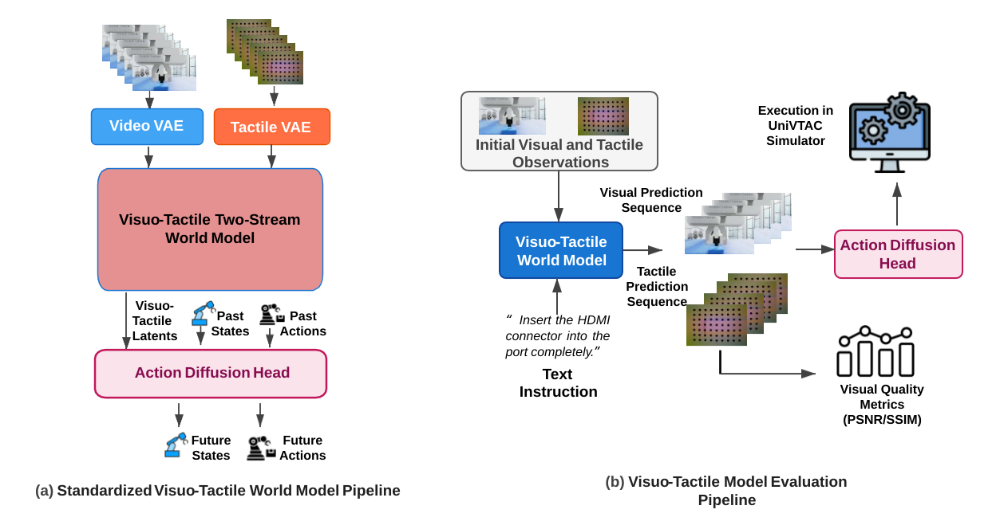

Modality
Purple
Vision → Visuo-Tactile
WorldArena 2.0 introduces tactile-aware evaluation so that world models must reason about contact, force, slip, and material interaction.
- Multimodal perception and prediction
- Tactile injection via a standardized pipeline
- Better coverage of contact-rich manipulation
